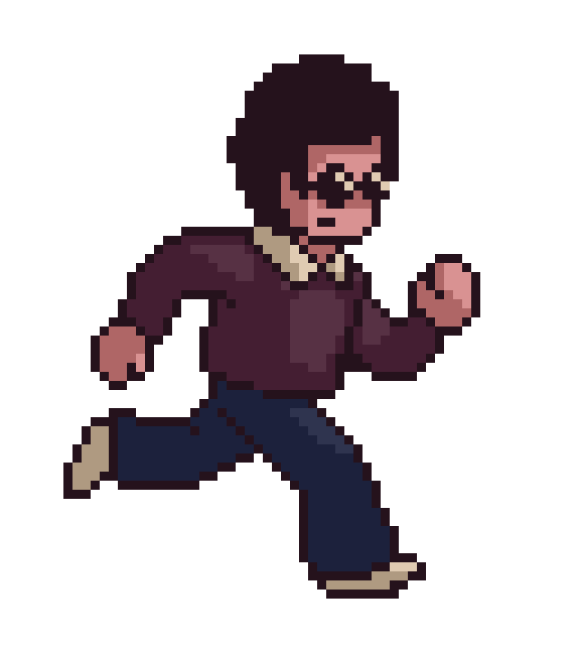

CONTEXT
Cityx est un city-builder éducatif combinant l'apprentissage des mathématiques et le jeu amusant, conçu pour les élèves de niveau CM1/CM2.
Les joueurs doivent agrandir leur ville en recrutant des citoyens possédant des compétences spécifiques dans divers domaines. Ces compétences sont débloquées en résolvant des problèmes mathématiques adaptés au contexte et à la progression du joueur.
La difficulté principale a été d'étudier comment rendre un jeu à la fois ludique et amusant. Pour garder le joueur engagé, plusieurs éléments ont été mis en place, parmi lesquels :
- Personnages attachants
- Interactions possibles
- Graphismes bienveillants
- Compétitivité amicale
- Courbe de difficulté progressive
- Récompenses intrinsèques et extrinsèques
Date de création du projet
Réalisé en 2023 lors de mon alternance chez MathsAndGo.
Equipe
Développé seul.
LIEN(s)
Cliquez ici pour jouer au jeu (bientot disponible !)
